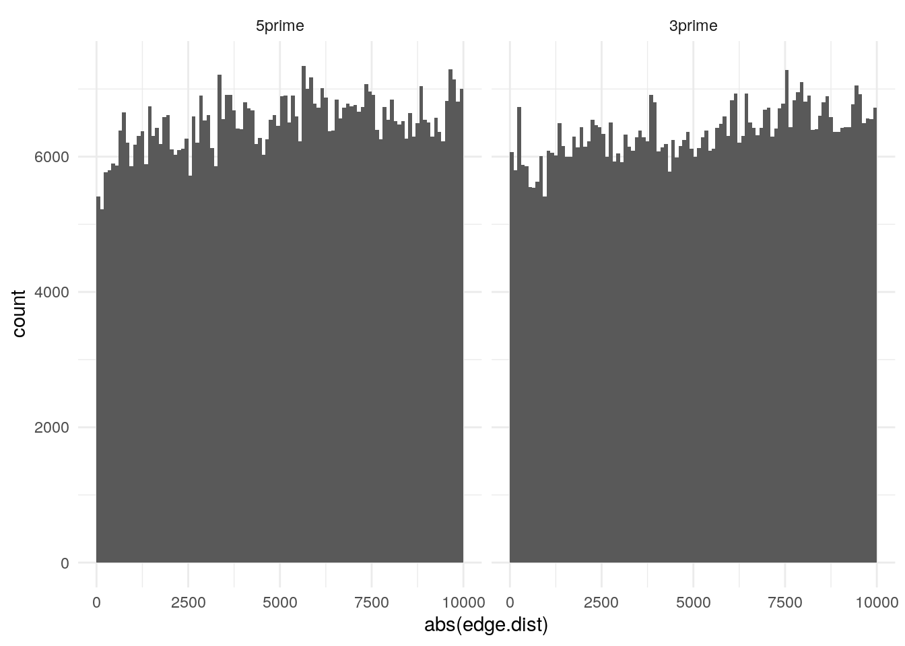
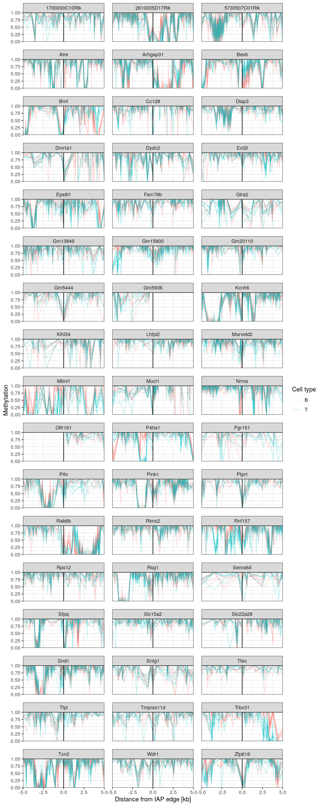

Methylation outside the IAP
Noah Kessler
29/09/2020
Last updated: 2020-10-21
Checks: 7 0
Knit directory: vm-retrotransposons/
This reproducible R Markdown analysis was created with workflowr (version 1.6.2). The Checks tab describes the reproducibility checks that were applied when the results were created. The Past versions tab lists the development history.
Great! Since the R Markdown file has been committed to the Git repository, you know the exact version of the code that produced these results.
Great job! The global environment was empty. Objects defined in the global environment can affect the analysis in your R Markdown file in unknown ways. For reproduciblity it’s best to always run the code in an empty environment.
The command set.seed(20200511) was run prior to running the code in the R Markdown file. Setting a seed ensures that any results that rely on randomness, e.g. subsampling or permutations, are reproducible.
Great job! Recording the operating system, R version, and package versions is critical for reproducibility.
Nice! There were no cached chunks for this analysis, so you can be confident that you successfully produced the results during this run.
Great job! Using relative paths to the files within your workflowr project makes it easier to run your code on other machines.
Great! You are using Git for version control. Tracking code development and connecting the code version to the results is critical for reproducibility.
The results in this page were generated with repository version 473dedd. See the Past versions tab to see a history of the changes made to the R Markdown and HTML files.
Note that you need to be careful to ensure that all relevant files for the analysis have been committed to Git prior to generating the results (you can use wflow_publish or wflow_git_commit). workflowr only checks the R Markdown file, but you know if there are other scripts or data files that it depends on. Below is the status of the Git repository when the results were generated:
Ignored files:
Ignored: analysis/02.Screen_for_VM_IAP_cache/
Untracked files:
Untracked: 20200803.RData
Untracked: __pycache__/
Untracked: analysis/unsorted.Rmd
Untracked: code/CTCFChIPatVM-IAPs_narrowpeak.sh
Untracked: code/CTCFChIPatVM-IAPs_pvalueRelax_narrowpeak.sh
Untracked: code/CpGdensity_VM-IAPs.R
Untracked: code/__pycache__/
Untracked: code/align_and_save.sh
Untracked: code/combine_8Indiv_CTCFChIP.r
Untracked: code/combine_8Indiv_CTCFChIP_pvalueRelax.r
Untracked: code/demultiplex4C_5indiv.sh
Untracked: code/heatmaps_NJK.R
Untracked: code/map.commands_cp.sh
Untracked: code/mergeBam
Untracked: code/normalize_log2.sh
Untracked: code/normalize_log2_IAP_consensus.sh
Untracked: code/normalize_log2_mergedBams.sh
Untracked: code/plot_chip_in_iap.R
Untracked: code/run_fimo_top10percent.sh
Untracked: code/run_meme_top_10_percent.sh
Untracked: data/4C-seq/bams/
Untracked: data/4C-seq/data/
Untracked: data/4C-seq/processed/
Untracked: data/4C-seq/restriction_frag_info/
Untracked: data/R_objects/
Untracked: data/chromHMM/liver_cStates_HMM.mm10.bed
Untracked: data/jellyfish/
Untracked: data/kmer/
Untracked: data/repeat_annotations/cVMIAP.5pLTR.fa
Untracked: data/repeat_annotations/mm10.IAP.meta_subelem.tsv
Untracked: data/repeat_annotations/rmskOutCurrent.Dfam_2_0.v4_0_7.all_IAPs.fixed_500kb_s_20_r_20.tsv.gz
Untracked: data/repeat_annotations/rmskOutCurrent.Dfam_2_0.v4_0_7.all_IAPs.txt.gz
Untracked: data/repeat_annotations/rmskOutCurrent.Dfam_2_0.v4_0_7.txt.gz
Untracked: data/validation/validated_elements.tsv
Untracked: data/validation/validation.element_IDs.tsv
Untracked: output/CTCF_ChIP.non_VM.pdf
Untracked: output/CTCF_and_motif.NonVM.Full.pdf
Untracked: output/CTCF_and_motif.NonVM.pdf
Untracked: output/CTCF_and_motif.VM.pdf
Untracked: output/CTCF_and_motif.all.a4.pdf
Untracked: output/CTCF_and_motif.all.a4.ps
Untracked: output/CTCF_and_motif.all.a4.svg
Untracked: output/CTCF_heatmap_legend.pdf
Untracked: output/CpG_density_plt.pdf
Untracked: output/FourC.combo_plots.pdf
Untracked: output/FourC.indiv_plots.pdf
Untracked: output/Methylation_outside_cVMIAPs.pdf
Untracked: output/Non_ERV.ranges2.background.png
Untracked: output/Non_ERV.ranges2.foreground.pdf
Untracked: output/Non_ERV.ranges2.foreground.svg
Note that any generated files, e.g. HTML, png, CSS, etc., are not included in this status report because it is ok for generated content to have uncommitted changes.
These are the previous versions of the repository in which changes were made to the R Markdown (analysis/06.Methylation_outside_the_IAP.Rmd) and HTML (docs/06.Methylation_outside_the_IAP.html) files. If you’ve configured a remote Git repository (see ?wflow_git_remote), click on the hyperlinks in the table below to view the files as they were in that past version.
| File | Version | Author | Date | Message |
|---|---|---|---|---|
| Rmd | 473dedd | Noah Kessler | 2020-10-21 | improve plot output size for html |
| html | 283b166 | Noah Kessler | 2020-10-21 | Build site. |
| Rmd | 0049a6f | Noah Kessler | 2020-10-21 | wflow_publish(“analysis/06.Methylation_outside_the_IAP.Rmd”) |
CpGs.in.region <- function(CpG.gr, region.gr, N.CpG=0, from.right=FALSE) {
ovlps <- as.data.frame(findOverlaps(CpG.gr, region.gr))
ovlps$CG.pos <- start(CpG.gr[ovlps$queryHits])
if (from.right) {
ovlps <- ovlps %>% arrange(subjectHits, desc(CG.pos))
}
selected.CGs <- ovlps %>%
group_by(subjectHits) %>%
mutate(CG.index=1:n())
if (N.CpG > 0) {
selected.CGs <- selected.CGs %>% top_n(-N.CpG, CG.index)
}
selected.CGs <- selected.CGs %>%
dplyr::select(-queryHits) %>%
as.data.frame()
colnames(selected.CGs) <- c("index", "CG.pos", "CG.index")
selected.CGs$side <- if (from.right) "right" else "left"
selected.CGs
}# get mm10 CpGs
mm10.CpG.gr <- sortSeqlevels(get.mm10.CpGs())
mm10.CpG.gr <- sort(mm10.CpG.gr) # should be sorted, but force anyway since it's needed
# obtain all (terminal) IAP LTRs
IAP.meta.gr <- readRDS("data/R_objects/mm10.IAP.meta.RDS")
IAP.subelem.counts <- IAP.meta.gr %>%
group_by(element.ID) %>%
summarize(N.subelem = max(as.numeric(subelem.idx)))
IAP.LTR.top_repName <- readRDS("data/R_objects/mm10.IAP.top_names.RDS") %>%
dplyr::select(element.ID, is.LTR, repName)
IAP.meta.gr <- left_join(IAP.meta.gr, IAP.subelem.counts, by="element.ID") %>%
mutate(is.LTR = subelem.type=="LTR",
first.subelement = subelem.idx == 1,
last.subelement = subelem.idx == N.subelem) %>%
dplyr::select(-subelem.type, -subelem.subidx, -N.subelem) %>%
left_join(IAP.LTR.top_repName, by=c("element.ID", "is.LTR")) %>%
df.as.gr
# identify regions in which to find CpGs
# look at 'left'-most CpGs from the 5' end of + strand LTRs
# and from the 3' end of - strand LTRs
IAP.LTR.look_left <- IAP.meta.gr[with(IAP.meta.gr,
is.LTR & ((first.subelement & strand == "+") | (last.subelement & strand == "-"))
)]
IAP.LTR.adjacent.look_right <- flank(IAP.LTR.look_left, ADJACENCY.DISTANCE, start=TRUE, both=FALSE, ignore.strand=TRUE)
# look at 'right'-most CpGs from the 3' end of + strand LTRs
# and from the 5' end of - strand LTRs
IAP.LTR.look_right <- IAP.meta.gr[with(IAP.meta.gr,
is.LTR & ((first.subelement & strand == "-") | (last.subelement & strand == "+"))
)]
IAP.LTR.adjacent.look_left <- flank(IAP.LTR.look_right, ADJACENCY.DISTANCE, start=FALSE, both=FALSE, ignore.strand=TRUE)
# pull the list of CpGs:
# INSIDE.N.CPG within the LTR, all CpGs within the
# ADJACENCY.DISTANCE flanks
IAP.LTR.CpGs <- rbind(
index.r_join(
IAP.LTR.look_left,
CpGs.in.region(mm10.CpG.gr, IAP.LTR.look_left, INSIDE.N.CPG, FALSE)
),
index.r_join(
IAP.LTR.look_right,
CpGs.in.region(mm10.CpG.gr, IAP.LTR.look_right, INSIDE.N.CPG, TRUE)
)
) %>%
arrange(element.ID, side, CG.index) %>%
dplyr::select(seqnames, start, end, strand, repName, element.ID, side, CG.pos, CG.index)
IAP.LTR.adj.CpGs <- rbind(
index.r_join(
IAP.LTR.look_left,
CpGs.in.region(mm10.CpG.gr, IAP.LTR.adjacent.look_right, 0, TRUE)
),
index.r_join(
IAP.LTR.look_right,
CpGs.in.region(mm10.CpG.gr, IAP.LTR.adjacent.look_left, 0, FALSE)
)
) %>%
arrange(element.ID, side, CG.index) %>%
dplyr::select(seqnames, start, end, strand, repName, element.ID, side, CG.pos, CG.index)
colnames(IAP.LTR.CpGs)[1] <- "chrom"
colnames(IAP.LTR.adj.CpGs)[1] <- "chrom"
# define which side of the element we're on, and how far away from that edge each CpG is
IAP.LTR.CpGs$LTR.bound.side <- factor(with(IAP.LTR.CpGs,
ifelse((side=="left" & strand=="-") | (side=="right" & strand=="+"), "3prime", "5prime")),
levels=c("5prime", "3prime")
)
IAP.LTR.CpGs$edge.dist <- with(IAP.LTR.CpGs,
ifelse(side=="left", CG.pos - start, CG.pos - end) * ifelse(strand=="+", 1, -1)
)
IAP.LTR.adj.CpGs$LTR.bound.side <- factor(with(IAP.LTR.adj.CpGs,
ifelse((side=="left" & strand=="-") | (side=="right" & strand=="+"), "5prime", "3prime")),
levels=c("5prime", "3prime"))
IAP.LTR.adj.CpGs$edge.dist <- with(IAP.LTR.adj.CpGs,
ifelse(side=="right", start - CG.pos, CG.pos - end) * ifelse(LTR.bound.side=="5prime", -1, 1)
)How many CpGs tend to lie in the 10^{4} bp flanking regions we have defined?
IAP.LTR.adj.CpG.count <- IAP.LTR.adj.CpGs %>% group_by(element.ID, side) %>% summarize(N=n())
hist(IAP.LTR.adj.CpG.count$N)
| Version | Author | Date |
|---|---|---|
| 283b166 | Noah Kessler | 2020-10-21 |
ggplot(IAP.LTR.adj.CpGs) +
geom_histogram(aes(x=abs(edge.dist)), breaks=seq(0, ADJACENCY.DISTANCE, 100)) +
facet_wrap(. ~ LTR.bound.side) +
theme_minimal() 
| Version | Author | Date |
|---|---|---|
| 283b166 | Noah Kessler | 2020-10-21 |
get.files.and.names <- function(dir, pattern) {
files <- file.path(dir, list.files(dir, pattern))
names <- as.character(sapply(files, function(n) paste(strsplit(basename(n),"\\.")[[1]][1:2], collapse="_")))
list(names = names, files = files)
}
LTR.CpG.methy <- function(LTR.CG.df, files, sample.names, shift=0, just.counts=FALSE, merge=TRUE) {
stopifnot(length(sample.names) == length(files))
for (f.idx in 1:length(files)) {
cat(sample.names[f.idx],"\n")
sample.data <- read.table(files[f.idx], header=FALSE)
if (just.counts) {
colnames(sample.data) <- c("chrom", "CG.pos",
paste0(sample.names[f.idx], ".umC"), paste0(sample.names[f.idx], ".mC"))
} else {
colnames(sample.data) <- c("chrom", "CG.pos",
paste0(sample.names[f.idx], ".umC"), paste0(sample.names[f.idx], ".mC"),
paste0(sample.names[f.idx], ".depth"), paste0(sample.names[f.idx], ".methy"))
}
sample.data$chrom <- factor(sample.data$chrom, levels=levels(LTR.CG.df$chrom))
sample.data$CG.pos <- sample.data$CG.pos + shift #shift to 1-indexed pos
LTR.CG.df <- left_join(LTR.CG.df, sample.data, by=c("chrom", "CG.pos"))
}
LTR.CG.df
}
methy.samples.B <- get.files.and.names(params$methy_data_dir, "^B6_[FM]_B_.*\\.methy\\.combined_strand\\..*\\.tsv$")
methy.samples.T <- get.files.and.names(params$methy_data_dir, "^B6_[FM]_T_.*\\.methy\\.combined_strand\\..*\\.tsv$")
IAP.methy.B <- LTR.CpG.methy(IAP.LTR.CpGs, methy.samples.B$files, methy.samples.B$names, 0, TRUE)B6_F_B_BS_10
B6_F_B_BS_12
B6_F_B_OX_11
B6_F_B_OX_9
B6_M_B_BS_1
B6_M_B_BS_4
B6_M_B_OX_2
B6_M_B_OX_3 IAP.methy.T <- LTR.CpG.methy(IAP.LTR.CpGs, methy.samples.T$files, methy.samples.T$names, 0, TRUE)B6_F_T_BS_13
B6_F_T_BS_15
B6_F_T_OX_14
B6_F_T_OX_16
B6_M_T_BS_5
B6_M_T_BS_7
B6_M_T_OX_6
B6_M_T_OX_8 IAP.methy.adj.B <- LTR.CpG.methy(IAP.LTR.adj.CpGs, methy.samples.B$files, methy.samples.B$names, 0, TRUE)B6_F_B_BS_10
B6_F_B_BS_12
B6_F_B_OX_11
B6_F_B_OX_9
B6_M_B_BS_1
B6_M_B_BS_4
B6_M_B_OX_2
B6_M_B_OX_3 IAP.methy.adj.T <- LTR.CpG.methy(IAP.LTR.adj.CpGs, methy.samples.T$files, methy.samples.T$names, 0, TRUE)B6_F_T_BS_13
B6_F_T_BS_15
B6_F_T_OX_14
B6_F_T_OX_16
B6_M_T_BS_5
B6_M_T_BS_7
B6_M_T_OX_6
B6_M_T_OX_8 cVMIAPs <- readRDS("data/R_objects/validation_name_ID.RDS") %>%
dplyr::filter(val_category == "Constitutive") %>%
dplyr::select(-val_category)
cVMIAP.methy <- lapply(
list(IAP.methy.B, IAP.methy.adj.B, IAP.methy.T, IAP.methy.adj.T),
function(df)
df %>%
dplyr::select(-start, -end, -repName) %>%
left_join(cVMIAPs, by="element.ID") %>%
dplyr::filter(!is.na(name)) %>%
pivot_longer(
starts_with("B6_"),
names_to="methy.var",
values_to="count"
)
) %>%
bind_rows() %>%
separate(methy.var, c("sample", "call"), "\\.") %>%
mutate(cell.type=strsplit.n(sample, "_", 3)) %>%
replace_na(list(count=0)) %>%
pivot_wider(names_from=call, values_from=count) %>%
mutate(
cvg = mC+umC,
methy = mC/cvg,
edge.dist.bin = (1+floor(edge.dist/100))
) %>%
dplyr::select(-mC, -umC)methy_outside_IAP_plot <- cVMIAP.methy %>%
filter(
(LTR.bound.side=="5prime" & edge.dist < 0) | (LTR.bound.side=="3prime" & edge.dist > 0)
) %>% # ignore methy inside elements
mutate(edge.dist=edge.dist/1000) %>%
ggplot(aes(x=edge.dist, y=methy, color=cell.type)) +
geom_line(aes(group=sample), alpha=0.25) +
geom_vline(xintercept = 0) +
coord_cartesian(xlim=c(-5, 5), ylim=c(0, 1), expand = FALSE) +
scale_x_continuous(breaks=seq(-5, 5, 2.5)) +
xlab("Distance from IAP edge [kb]") +
ylab("Methylation") +
scale_color_discrete(name="Cell type") +
facet_wrap(vars(name), ncol=3) +
theme_bw() +
theme(panel.spacing = unit(1, "line"))
print(methy_outside_IAP_plot)
ggsave("output/Methylation_outside_cVMIAPs.pdf", methy_outside_IAP_plot, width=15, height=40)
sessionInfo()R version 3.6.1 (2019-07-05)
Platform: x86_64-pc-linux-gnu (64-bit)
Running under: Debian GNU/Linux 9 (stretch)
Matrix products: default
BLAS: /usr/lib/libblas/libblas.so.3.7.0
LAPACK: /usr/lib/lapack/liblapack.so.3.7.0
locale:
[1] LC_CTYPE=en_GB.UTF-8 LC_NUMERIC=C
[3] LC_TIME=en_GB.UTF-8 LC_COLLATE=en_GB.UTF-8
[5] LC_MONETARY=en_GB.UTF-8 LC_MESSAGES=en_GB.UTF-8
[7] LC_PAPER=en_GB.UTF-8 LC_NAME=C
[9] LC_ADDRESS=C LC_TELEPHONE=C
[11] LC_MEASUREMENT=en_GB.UTF-8 LC_IDENTIFICATION=C
attached base packages:
[1] stats4 parallel stats graphics grDevices utils datasets
[8] methods base
other attached packages:
[1] dplyr_0.8.3 tidyr_1.0.0
[3] ggplot2_3.2.1 BSgenome.Mmusculus.UCSC.mm10_1.4.0
[5] BSgenome_1.52.0 rtracklayer_1.44.4
[7] Biostrings_2.52.0 XVector_0.24.0
[9] GenomicRanges_1.36.1 GenomeInfoDb_1.20.0
[11] IRanges_2.18.3 S4Vectors_0.22.1
[13] BiocGenerics_0.30.0
loaded via a namespace (and not attached):
[1] Rcpp_1.0.3 lattice_0.20-41
[3] Rsamtools_2.0.3 assertthat_0.2.1
[5] zeallot_0.1.0 rprojroot_1.3-2
[7] digest_0.6.23 R6_2.4.1
[9] backports_1.1.5 evaluate_0.14
[11] pillar_1.4.2 zlibbioc_1.30.0
[13] rlang_0.4.2 lazyeval_0.2.2
[15] whisker_0.4 Matrix_1.2-18
[17] rmarkdown_1.18 labeling_0.3
[19] BiocParallel_1.18.1 stringr_1.4.0
[21] RCurl_1.95-4.12 munsell_0.5.0
[23] DelayedArray_0.10.0 compiler_3.6.1
[25] httpuv_1.5.2 xfun_0.11
[27] pkgconfig_2.0.3 htmltools_0.4.0
[29] tidyselect_0.2.5 SummarizedExperiment_1.14.1
[31] tibble_2.1.3 GenomeInfoDbData_1.2.1
[33] workflowr_1.6.2 matrixStats_0.55.0
[35] XML_3.98-1.20 crayon_1.3.4
[37] withr_2.1.2 later_1.0.0
[39] GenomicAlignments_1.20.1 bitops_1.0-6
[41] grid_3.6.1 gtable_0.3.0
[43] lifecycle_0.1.0 git2r_0.26.1
[45] magrittr_1.5 scales_1.1.0
[47] stringi_1.4.3 farver_2.0.1
[49] fs_1.3.1 promises_1.1.0
[51] ellipsis_0.3.0 vctrs_0.2.0
[53] tools_3.6.1 Biobase_2.44.0
[55] glue_1.3.1 purrr_0.3.3
[57] yaml_2.2.0 colorspace_1.4-1
[59] knitr_1.26